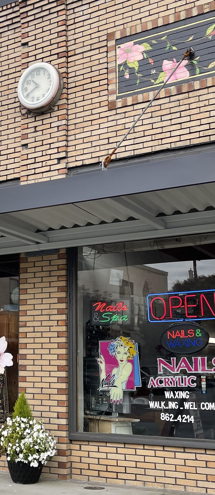
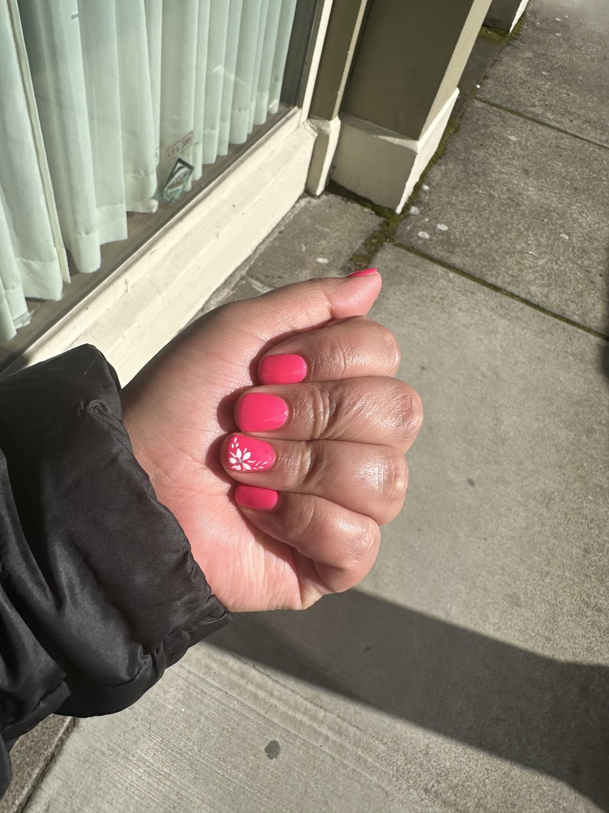
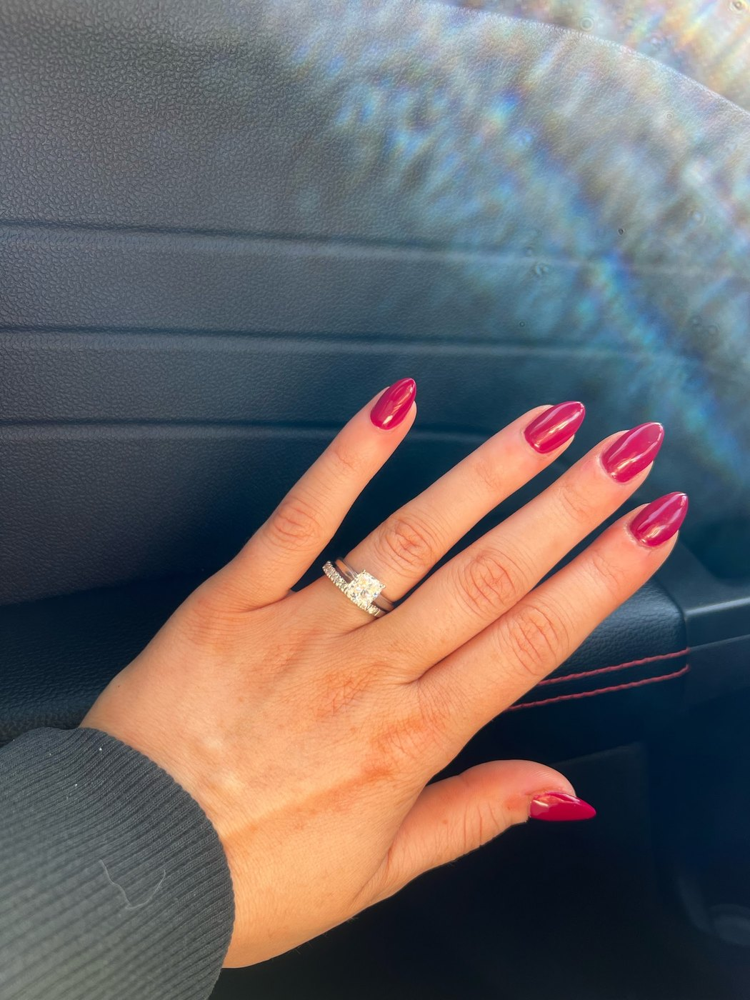
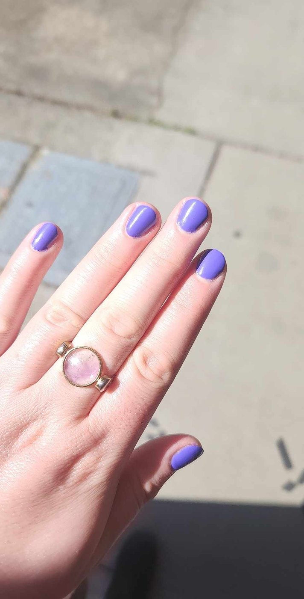
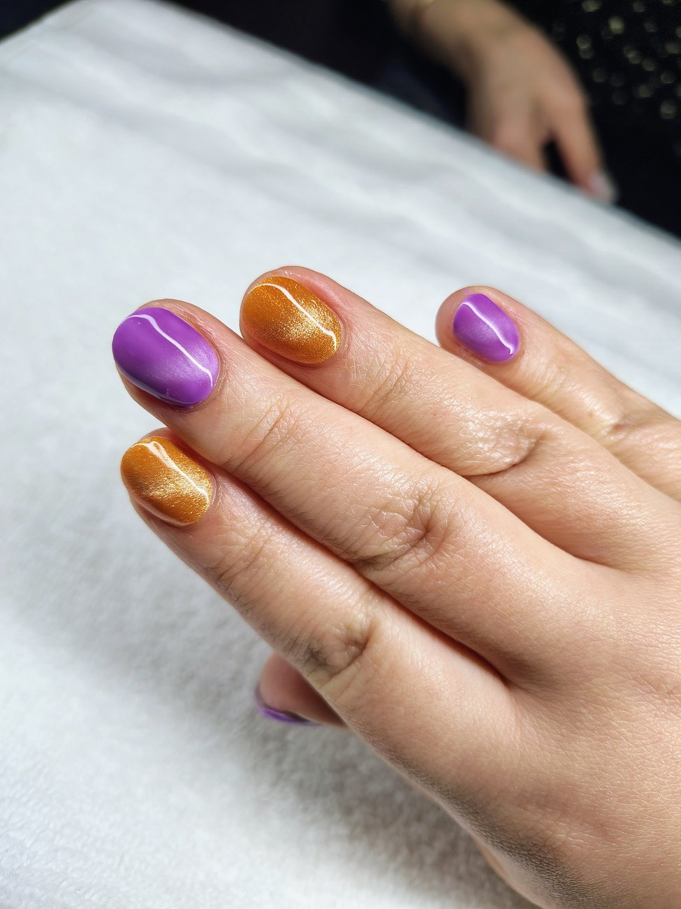
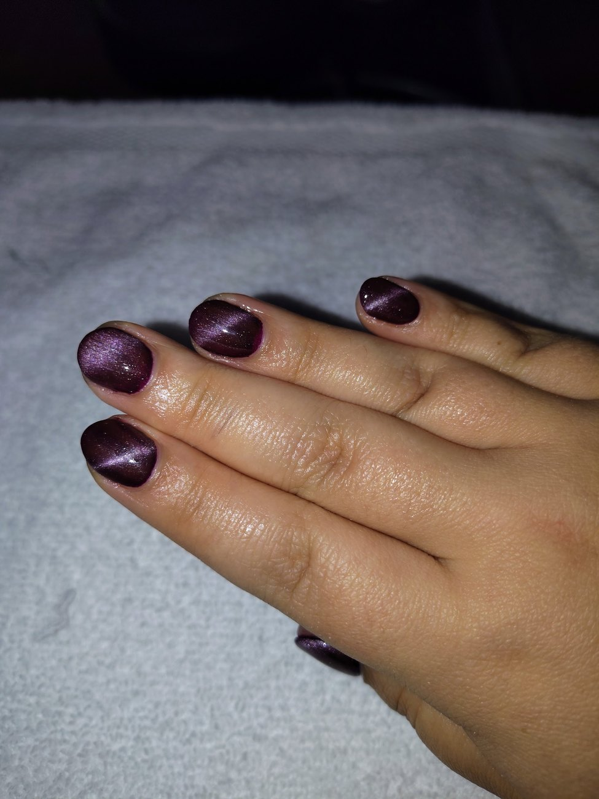
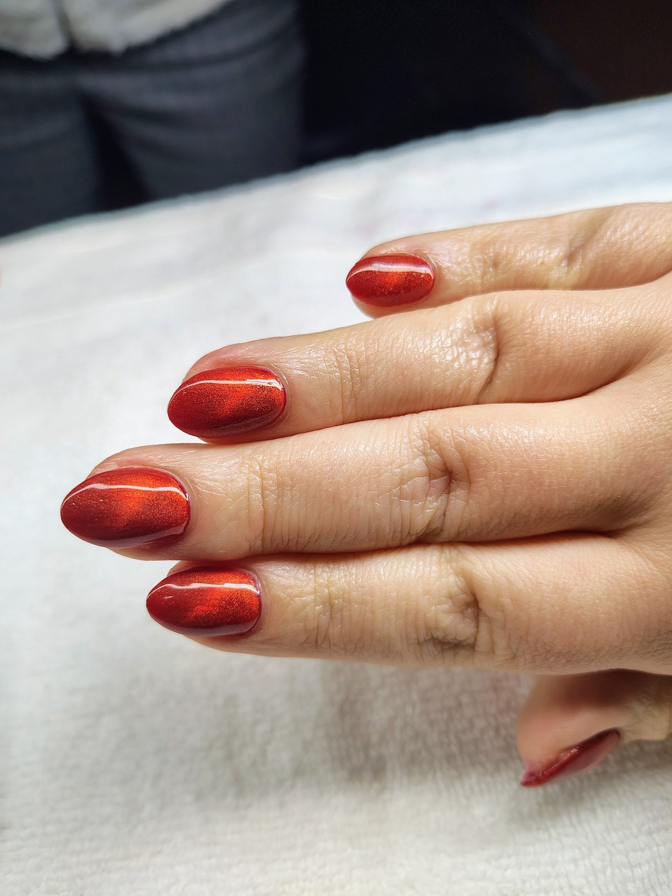
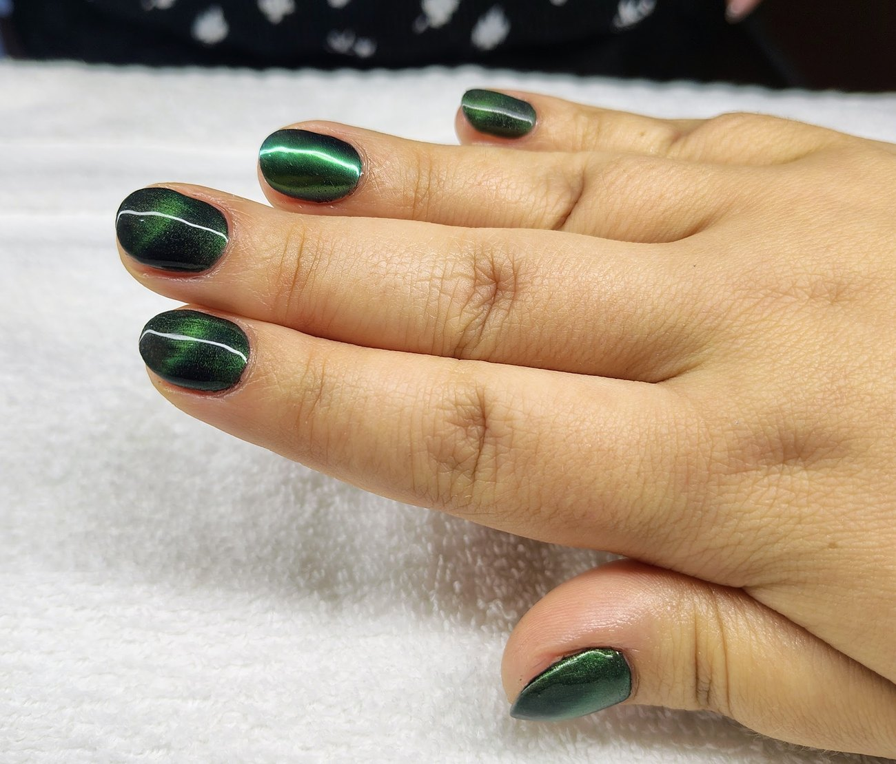
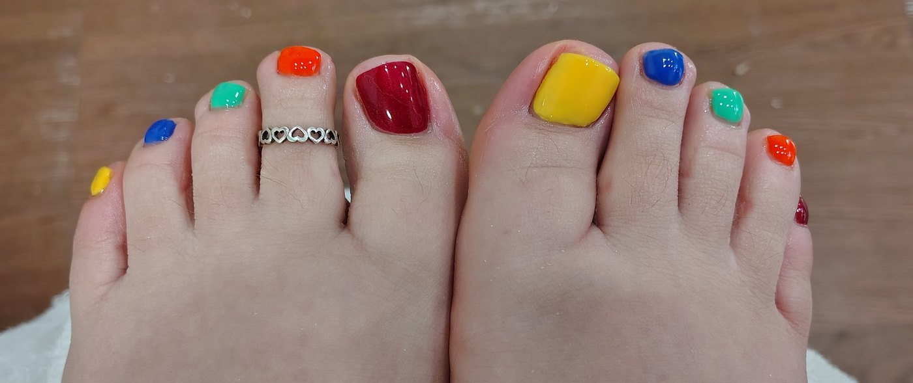
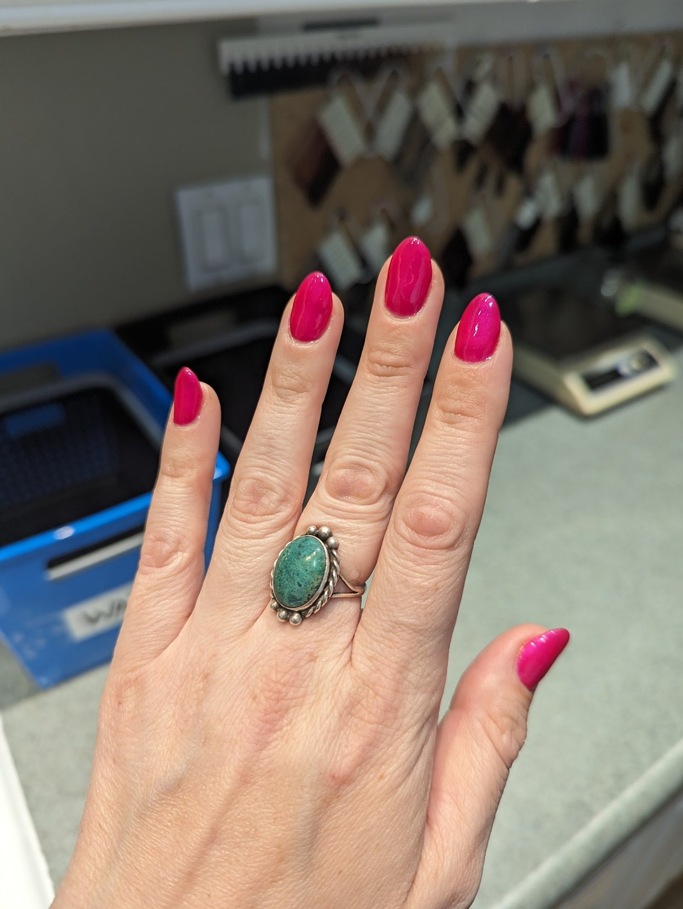

- Acrylic full sets
- Colour, glossed to a high shine
- Cat-eye
- Chrome and metallic finishes
Acrylic is painted on their window. The finishes are photographed on hands at this shop, and one of their Google reviews names the cat-eye by name.

When to find us
checking hours…
1111 Main St, Sumner, WA 98390
Open in Maps ↗
What they do
Tap a line to open it. There's no price list published anywhere for this shop — call and ask, and they'll tell you.
Acrylic is painted on their window. The finishes are photographed on hands at this shop, and one of their Google reviews names the cat-eye by name.
From their own photos, and from a customer who wrote about her Christmas toes on Google.
Both signs in the glass say it — the painted window and the lit oval behind it. What they wax and what it costs isn't published anywhere, so ring the shop and ask.
Their work



What people say
Sumner Nails has never had a website, so everything customers have written about Tony and Tina is sitting on their Google listing. Read it there, in their own words.
Show them what you want
Every one of these was done at this shop. Tap one — tap it again to put it back.
Tap a colour






The shop
A husband-and-wife nail shop on the downtown block, and the kind of place where the customers know both owners by name.
Read their Google reviews and the same two first names come back over and over — people don't write about "the salon", they write about Tony and Tina. That is the whole business: two people who already know what you had done last time.
The front is easy to spot. Buff brick, a grey awning, a round clock on the wall, and a painted flower panel above the window. The glass does the advertising, and it has been doing it alone — there has never been a website behind it.
Getting in
(253) 862-4214 goes straight to the shop — no booking app, no account.
A set, a pedicure, or waxing. Ask what a shade or a finish would cost while you're on.
Their window says walk-ins welcome, and a customer on Google says you can call the same day and come in.
Sumner, Washington